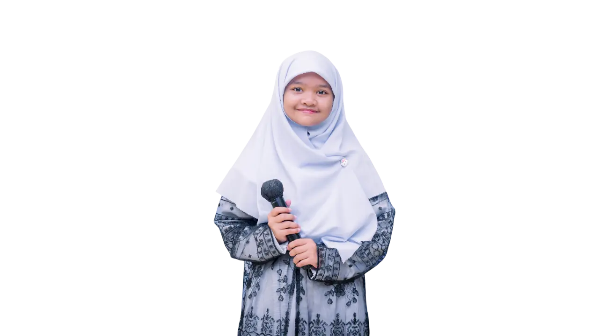

Berita & Informasi
Ikuti terus perkembangan terbaru, prestasi membanggakan, dan beragam aktivitas positif dari Yayasan Islamic Center Abu Thalhah Al Anshari.
Belum ada berita yang diterbitkan.

Santri Yayasan Abu Thalhah Raih Juara Musabaqah Tilawatil Qur'an (MTQ) Tingkat Provinsi
Prestasi membanggakan kembali diraih oleh santri Yayasan Islamic Center Abu Thalhah Al Anshari dalam kejuaraan MTQ...
Penerimaan Santri Baru (PSB) Tahun Ajaran 2026/2027 Telah Resmi Dibuka
Yayasan Islamic Center Abu Thalhah Al Anshari mengundang putra-putri terbaik bangsa untuk bergabung menjadi generasi...

Kajian Parenting Islami: Mendidik Anak dengan Keteladanan Akhlak Mulia
Menghadirkan narasumber ahli di bidang psikologi Islam, Yayasan sukses menyelenggarakan kajian parenting bulanan...

Program Unggulan Tahfidz Al-Qur'an & Olahraga Sunnah Memanah Santri
Kegiatan ekstrakurikuler santri senantiasa diisi dengan hafalan Al-Qur'an and olahraga yang disunnahkan...
Yayasan Abu Thalhah Gelar Bakti Sosial & Penyaluran Sembako Untuk Warga
Bentuk rasa syukur and solidaritas sesama, yayasan mengadakan kegiatan tebar sembako bermanfaat...
Workshop Peningkatan Kompetensi & Karakter Pendidik Generasi Rabbani
Pelatihan tenaga pendidik guna menghadirkan proses belajar mengajar yang semakin profesional...
Penyaluran Infaq & Wakaf Produktif Untuk Pembangunan Fasilitas Santri
Laporan transparan penyaluran donasi wakaf guna mendukung sarana ibadah and ruang kelas baru...
Pelatihan Kepemimpinan & Kemandirian Santri Dalam Rangkaian MABIT
Malam Bina Iman dan Taqwa (MABIT) yang membentuk karakter kedisiplinan dan keberanian santri...